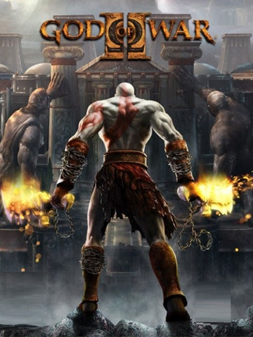

onde foi criado god of war é uma saga que
nasceu em 2005 ainda na época do PS2 e mudou bastante do que
conhecemos em termos de jogos de ação. Kratos, seu protagonista,
trouxe uma fúria desenfreada e jogabilidade simples e viciante para
os controles dos jogadores. O título teve várias sequências, versões
portáteis e hoje comemora uma longa história. Entenda melhor os
fatos que levaram o Fantasma de Esparta em sua jornada, até onde ele
está hoje, na ordem em que os games foram lançados:

Kratos é atormentado com memórias de seus atos
e faz um trato de servir aos outros deuses do Olimpo por dez anos
. Cansado de servir, convoca Atena e, ela afirma que o perdoará
por seus atos se ele realizar uma última tarefa: matar Ares.
Para isso ele deve encontrar e usar a Caixa de Pandora
God oF War

Em God of War 2, Kratos viaja até as Irmãs do Destino
para mudar os acontecimentos de sua luta contra Zeus e convocar os Titãs
do passado para travar uma guerra contra o Olimpo. Isso mostra o quão
determinado o Fantasma de Esparta está para mudar o curso das coisas.
.jpg)